赫利奥，携昼者
赫利奥（Helior）是石顶（Stonetop）四位主神（神明与宗教）之一。他是太阳与光明之神，希望与怜悯的灯塔，黑暗的炽热仇敌。
若你的起始玩家角色（PC）中有人持有持光者剧本，他们将通过自己的在场、背景，以及角色创建与相互介绍时所作的决定，回答本节中的许多问题。把那位玩家角色当作你这场游戏里赫利奥的专家，但别忘了也向其他玩家角色询问他们的看法与经历。
主题
选择，或掷 。
| 1-2 | 太阳／白昼／光 |
|---|---|
| 3-4 | 希望／勇气／志向 |
| 5-6 | 怜悯／慈善／仁慈 |
| 7 | 真理／启示 |
| 8 | 火／燃烧／温暖 |
| 9 | 荣光／敬畏／威严 |
| 10 | 光辉／美／炽烈 |
| 11 | 庇护／圣洁／防御 |
| 12 | 净化／涤净／救赎 |
问题
按传说：
- 赫利奥如何成为（一位神）？他的起源故事是什么？
- 他如何获得或创造白焰？
- 哪位神是他的对手／盟友／情人／亲族？
- 太阳／赫利奥每晚去向何方？
- 日食因何而起？它们意味着或预示着什么？
- 谁曾以赫利奥之名著名地殉道？是谁杀了他们，为何？
用这些答案来帮助决定赫利奥的真实本质是什么（神明与宗教）。
钩子
- 一位赫利奥的信徒在附近镇子传道，煽动异议。
- 一个孩子在日食期间出生，带着太阳形的胎记。
- 前任持光者的精魂向一名玩家角色显现，并交给他们一项任务。
- 一位曼马奇（Manmarch）酋长（北曼马奇）得到前任持光者的一件遗物，并打算拍卖。
- 一名骗子或术士（地底之物）自称持光者。
- 春天迟迟不来；征兆指向赫利奥被困或受伤。
崇拜
对赫利奥的崇拜是什么样的？它可能是……（选1）
- 古老、广泛、众所周知；
- 在利戈斯与南方（Lygos）（利戈斯与南方）最为常见；
- 新事物，许多人仍闻所未闻；
- 旧事物，已被大多数人遗忘；或
- 遭到广泛迫害。
那么，怎样才是对赫利奥恰当的崇拜？
它可能涉及……（选1或2）
- 庄严的圣歌；
- 宁静的冥想；
- 欢快的歌唱；
- 苦修的克己；
- 狂热的舞蹈；
- 正式的仪典；
- 药物与致醉之物；和／或
- 痛苦与献祭。
考虑或询问：
- 为何对赫利奥的崇拜包含这些事？按他的信徒所说，这些事为何如此取悦他？
- 这些做法如何因社群而异？
- 至日如何庆祝或遵守？
- 若对赫利奥的崇拜是外来的／新的／被遗忘的／受迫害的：这一带还崇拜哪些别的太阳神？（指引见 神明与宗教）
崇拜场所
赫利奥在石顶的众神殿有一座神龛。在石顶之外：考虑这个社群里是否有人崇拜赫利奥，以及在何处。
对任何一处崇拜场所：
- 它是什么？（神龛、隐修处、果园、自然地貌等）
- 它在哪儿？（私宅、公共建筑、镇子外面等）
- 赫利奥如何被呈现？
- 什么符号／陈设装饰着它？
- 他的哪些主题（上一页）被强调？
- 谁照料它？
这处崇拜场所是什么样的？它可能是……（选1）
- 被置于至高的尊荣，在众神之上；
- 被悉心照料，受到应有的尊敬；
- 新近设立／最近被修复；
- 年久失修、破败不堪；
- 隐藏起来，只有虔信者才知道去哪儿找；
- 以上某种变体；或
- 完全是别的什么。
持光者
持光者是或曾是赫利奥钦定的仆人，执掌他的力量与恩典。同一时间只曾有一位在任。若你的玩家角色中有人持有持光者剧本，那就是他们。
若没有玩家角色持有持光者剧本，则考虑或询问：
- 曾经有过多少位持光者？
- 当今世上是否有一位在任的持光者？
- 若有，他们住在何处，名声如何？
- 若无，上一位持光者生活在何时？
- 他们本人是／曾是什么样的人？
- 他们以哪些伟业闻名／曾闻名？
- 他们最伟大的盟友是／曾是谁？最伟大的敌人呢？
- 持光者的衣钵据说如何传递或显现？
若一名 NPC 持光者（或其精魂）反对或给玩家角色惹麻烦，把他们写成一桩威胁（若仍在世则是一个变数，若从彼岸惹麻烦则是一个魔法实体）。
记住：NPC 没有剧本。
一名 NPC 持光者可能带有让人想起玩家角色持光者的标签或行动，也可能没有。
信徒
赫利奥是一位慷慨的神，把光与温暖带给世界。他号召人类也这样做，过怜悯、慈善与希望的生活。只有少数信徒真正听从他的召唤。
在任何一个给定的社群里，询问或考虑：
- 这里住着多少赫利奥的信徒？
- 是有正式的教团或修会，还是只是志同道合的个人？
- 他们当中谁最引人注目？
- 他们有多大影响力？
- 他们从事什么慈善工作？
- 社群里谁怨恨他们？
- 他们与其他聚落的信徒有什么往来？
若一个社群的赫利奥信徒反对或给玩家角色惹麻烦，把他们写成一桩威胁（像一个变数，但也许是一个机构）。
黑暗的实体
持光者剧本有行动和祷文，影响“黑暗的”生物或精魂。地底之物（地底之物）肯定算，任何被腐化的存在也算。夜晚与暗处（如洞穴）的精魂大概也算。亡灵几乎肯定是黑暗的实体，但也许有例外？
问持光者他们认为什么使某物成为黑暗的生物或精魂。考虑你对该实体所知的一切，作出裁定。
有疑虑时，交给命运骰或一次相宜行动的结果。
神器

各色宝物- 一瓶柠檬浸油（价值 0）
- 一只装饰着风格化太阳的铜项圈（价值 1）
- 嵌在石地板上、宽两步的青铜符圈；经赫利奥祝福，是抵挡黑暗精魂的结界（魔法，无法携带，价值 2）
- 一盏点燃的油灯，不耗油；◇ 除非被掐灭、吹熄或打翻，它将永远燃烧（魔法，易碎，价值 2）
- 圣遗物（◇◇◇ 次，对收藏者价值 3）：若你在向太阳神祷告时行囊中有一件，你可以标记一次用途来代替选择一项代价
- 一顶白金冠冕，由纯洁灵魂佩戴时 ◇ 闪耀圣光（触及，范围）（魔法，价值 4）
小秘宝
选1，或让人掷骰。
险境
相关实体
 朝圣者
朝圣者
本能 寻找庇护与目的
- 人数增长：细流、不断的涌入、潮水
- 索要时间、关注、体谅
- 消耗或耗尽资源
- 与当地人惹上麻烦
- 误解教义
- 分裂成派系
随着持光者力量增长，其神迹的传闻多半会传开。朝圣者很可能会跟上。他们来找持光者，求疗愈、求方向、求目的。
狂热者
HP 10; Armor 0
Damage weapons (tags by weapon)
本能 保护他们的信仰
- 作出激烈的论辩
- 为事业受苦
- 为更大的善作恶
持光者常常吸引忠实的追随者，赫利奥一些更有魅力的信徒也是如此。这些追随者中，有些人可能会把事情做得过头。